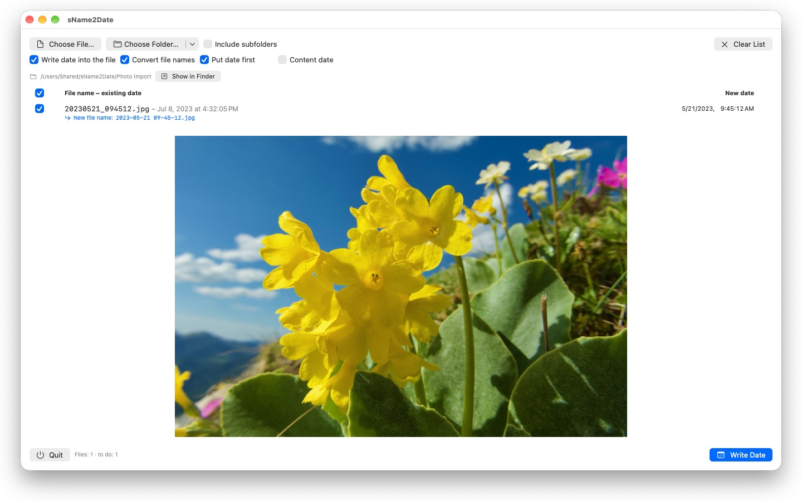
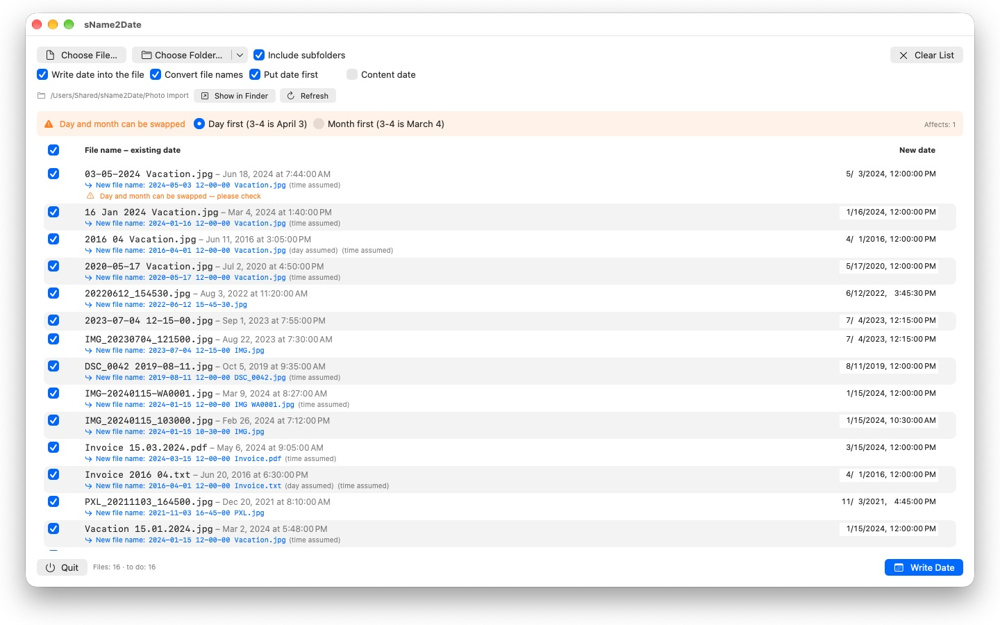

Photos without a capture date sort themselves nowhere. sName2Date takes the date from the file name and writes it where every photo library looks for it.



Plenty of photos and videos carry their date in the file name, and so do audio recordings and documents such as PDFs — just not where software looks for it. Pictures saved from a chat, pulled off a scanner or rescued from an old archive arrive as IMG_20240115_103000.jpg, Vacation 15.01.2024.jpg or Invoice 23112024.pdf, and every photo library — and the Finder — files them under today's date.
sName2Date reads the date from the file name and writes it into the file as the capture date. If the file has none yet, it gets one. For PDFs and other files without a capture date, the app sets the file's creation and modification date.
FORMATS IT RECOGNIZES
Dates and times in the common notations, among them:
- 2024-01-15 10-30-00
- IMG_20240115_103000
- IMG-20240115-WA0001
- 2024-01-15 · 2024 01 15 · 2024_01_15
- 15.01.2024 · 15-01-2024 · 15.01.24 · 15012024
- 15 Jan 2024 · 15 March 2024 · January 15 2024
- 2016 04 · 04-2016 — year and month only
Spelled-out month names are read in your system language and in English, in both the long and the abbreviated form.
If the name holds only a date, a time is assumed — you decide which one. If the day is missing too, the first of the month applies, and the row says so. If several dates appear in one name, the first one wins. And where day and month could be swapped, your setting decides — the files in question are marked instead of being guessed at silently.
If there is no date in the name at all, you type it in yourself on the right of the row. That reaches back to 1826, the year of the oldest surviving photograph — so a scanned nineteenth-century picture can be dated just like yesterday's.
WHAT GETS CHANGED
sName2Date writes EXIF DateTimeOriginal and DateTimeDigitized as well as TIFF DateTime, and for videos and audio recordings the creation date inside the container. On request, the creation and modification date of the file itself as well.
The image data stays untouched: a JPEG is not recompressed, a video is not re-encoded. For videos and audio recordings the app usually changes just a few bytes inside the container instead of rewriting it — even a large movie is done in an instant.
JPEG, PNG, TIFF, HEIC and GIF hold a capture date, as do the video formats MP4, MOV and M4V and the audio formats M4A and M4B.
EVEN FILES THAT CANNOT HOLD A CAPTURE DATE
A PDF, a text file, a spreadsheet has no field for a capture date at all — and still comes into the list. sName2Date sets the file's creation and modification date there, the only place the date can end up; the row shows it with an orange check mark instead of a green one. So here the extension does not matter — PDFs, text, spreadsheets, archives, anything.
If the file is not to be touched at all, you clear the checkbox “Write date into the file” at the top of the window. sName2Date then only brings the name into ISO notation: Invoice 15.03.2024.pdf becomes 2024-03-15 12-00-00 Invoice.pdf, and in the Finder the folder now sorts by date. If you prefer, the date stays where it stood in the name instead of moving to the front.
EVERYTHING CAN BE TAKEN BACK
A run is undone completely with Cmd+Z — capture date, file timestamps and the changed file name. Cmd+Shift+Z restores it.
WHOLE FOLDERS
sName2Date takes entire directory trees in one go and can skip files that already have a capture date. Folders you have released once are remembered, and it never asks about them again.
sName2Date Lite · Free — The edition for one file per run: write the date from the file name into a photo, a movie, or an audio recording as the capture date, set it by hand, put the name into ISO notation, and undo everything with ⌘Z — the same capabilities as sName2Date, just without entire folders.
- Requires macOS 12 or later
- 24 languages
- Support: SwiftAppsBavaria@gmx.net
More Apps
sCollect
Organize music, movies, audiobooks, ebooks, and other collections in a media library.
sCollectPlay
The player for the media library: play music, movies, audiobooks, and podcasts simply from a folder, an iTunes XML file, or an sCollect library.
sCollectPlay Lite
The lean edition of sCollectPlay: simply open a folder, an iTunes XML file, or an sCollect library and play music, movies, audiobooks, and podcasts from it — with playlists, audio and subtitle tracks, slow motion, and frame-by-frame stepping. Only one source is open at a time. The column browser, custom playlists, and the list of recently used sources are available only in the full version.
sVectorLift
Open, view, and save old vector clip art as SVG — CorelDRAW, Windows Metafile, and CGM.
SwiftRename
From memory card to archive: name photos and videos by capture time, file them by year, month or day, spot duplicates — RAW included.
sBikeBridge
Analyze bike rides without uploading them to a portal: import FIT files from any bike computer that records in this format, plus GPX and TCX. Rides are kept in a dedicated library on the Mac — with map, power and heart rate, photos, and notes; the import detects duplicates. Stats by year or month and filters by distance, elevation gain, and duration make rides comparable. The map is also available offline if desired.